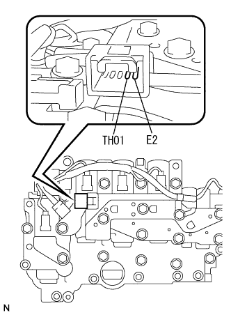

Automatic Transmission Temperature Sensor (U660E) Inspection |
| 1. Inspect Automatic Transmission Temperature Sensor |
Disconnect the automatic transmission temperature sensor connector.
Check that the connector case and terminals of the automatic transmission temperature sensor are not deformed or damaged.
 |
Using SST (Toyota electrical tester), inspect terminals 2 (THO1) and 1 (E2) of the automatic transmission temperature sensor.
| Tester Connection | Condition | Standard |
|---|---|---|
| 2(THO1) - (E2) | Fluid temperature 10 °C | 5.8 to 7.1 |
| 2(THO1) - (E2) | Fluid temperature 110 °C | 0.22 to 0.28 |
Using SST (Toyota electrical tester), check the insulation of the terminals.
| Tester Connection | Condition | Standard |
|---|---|---|
| 2 (THO1) - Body ground | Always | 10k Ω or higher |